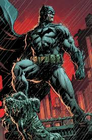

Batman, em sua origem mais conhecida, é o alter ego de Bruce Wayne, um bilionário playboy e filantropo de Gotham City, que se torna um vigilante noturno para combater o crime após testemunhar o assassinato de seus pais. Bruce, um gênio com treinamento em combate e investigação, utiliza sua riqueza, inteligência e arsenal tecnológico para enfrentar vilões sem depender de superpoderes.

Link para fandom